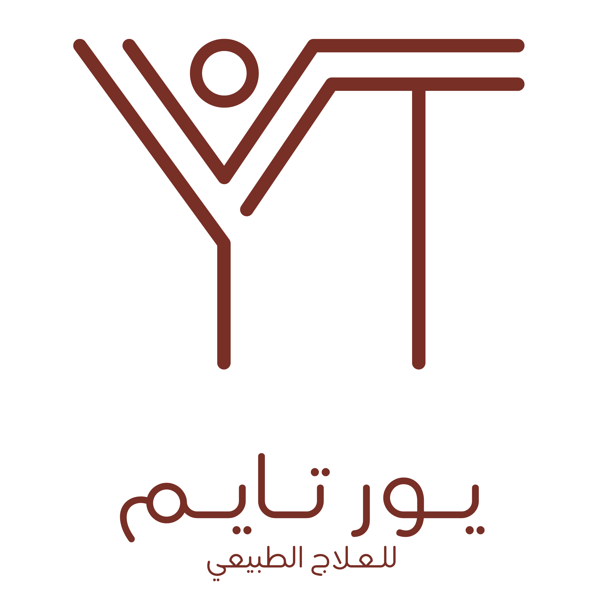

العلاج الطبيعي هو علم وفن استخدام الطرق الطبيعية في علاج الحالات المرضية التي تصيب الأنسان في أي
مرحلة من مراحل حياته. كما تعمل مراكز العلاج الطبيعي على تحسين صحة الإنسان وقدرته على القيام بالعديد
من مهامه اليومية بنشاط وأكثر حيوية والمقدرة على الحركة إذا كان الشخص مصاب بأي مرض نتيجة إصابات أو
أمراض مختلفة.
للتعرف أكثر على مركز
يورتايم للعلاج الطبيعي
أطلع على البروفايل الخاص بنا.
تصفح البروفايل